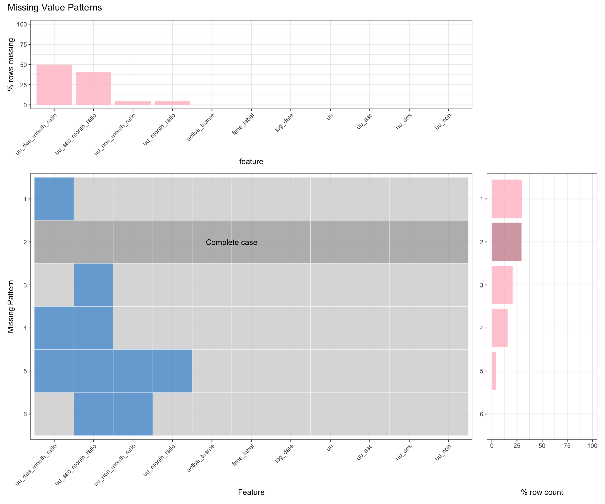

Chapter 4 Missing values
4.1 Summary
In this project, there is only one dataset contains missing values, the overall_status_tname_201812_202103.csv that contains general information for content creators grouped by tag in each fan base size level monthly. To understand the missing patterns, we call the plot_missing function to generate missing value pattern plot for the respective dataset.
4.2 Analysis

Firstly, to gain a better understanding of the dataset, the column information is as followed:
active_tname: The tag for content creators. For example: Anime, Movie, V Log, etc.fans_label: The fan base size label for content creators. It ranges from 0 to 5, representing smallest amount of subscriptions to largest amount of subscriptions.uu: Number of unique content creators in the respective log_date month.uu_non: Number of unique content creators in the respective log_date month that their fan base size level does not change from last month.uu_asc: Number of unique content creators in the respective log_date month that their fan base size has increased from last month.uu_des: Number of unique content creators in the respective log_date month that their fan base size has decreased from last month.uu_month_ratio= Number of unique content creators in this month / Number of unique content creators in last month.uu_non_month_ratio=uu_nonthis month /uu_nonlast month.uu_asc_month_ratio=uu_ascthis month /uu_asclast month.uu_des_month_ratio=uu_desthis month /uu_deslast month.
Based on the plot, there are four columns that contains missing values: uu_month_ratio, uu_non_month_ratio, uu_asc_month_ratio, and uu_des_month_ratio. These four variables are calculated using the last month’s number of unique content creators with the respective fan base size and tag name divided by this month’s number of unique content creators with the respective fan base size and tag name. In other words, they depend on uu, uu_non, uu_asc, and uu_des, respectively.
While all the ratios are divided by a metric from last month, if the metric in last month is 0, the ratio would be NA. Therefore, all data entries in the earliest month would have all ratio data missing, resulting in missing all four ratios simultaneously. The columns with the highest missing percentage are uu_asc and uu_des. The reason is that there are a limited number of subscribers for some particular tag and fan base size level, so the probability of the number of content creators in the respective log_date month that their fan base size has increased/decreased from last month is comparably low.
In conclusion, the reason for all missing values is that last month’ uu, uu_non, uu_asc, or uu_des being 0.